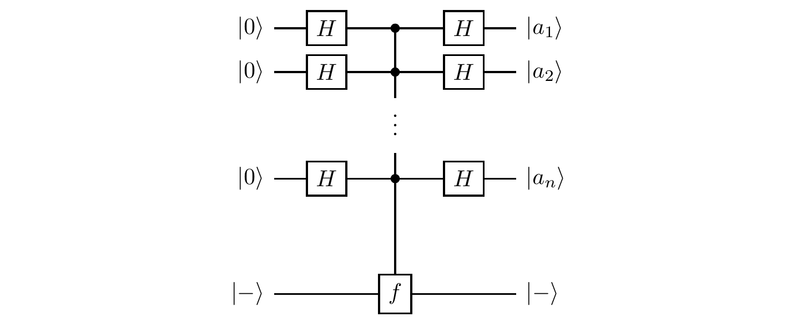
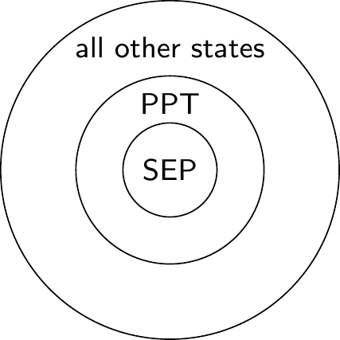
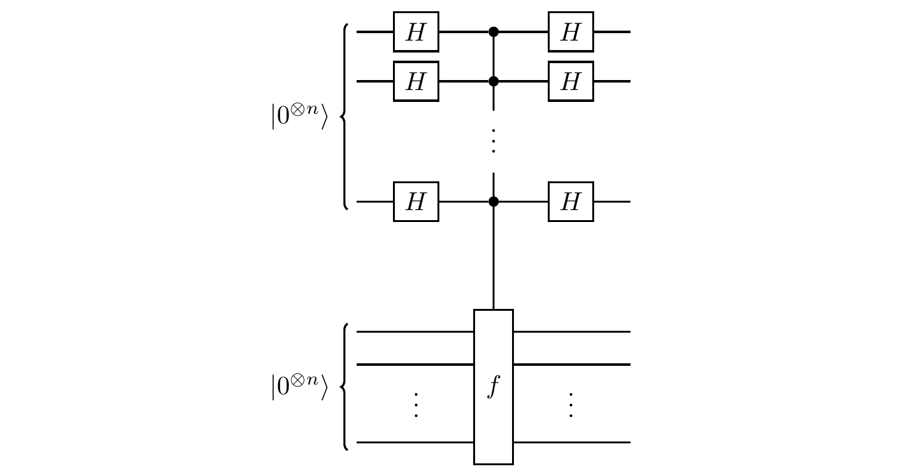

Remarks and exercises
Purifications and isometries
All purifications of a density operator are related by an isometry acting on the purifying system.
That is, if \rho is a density operator on \mathcal{H}, and |\psi_A\rangle\in \mathcal{H}\otimes\mathcal{H}_\mathcal{A} and |\psi_B\rangle\in\mathcal{H}\otimes\mathcal{H}_B are two purifications of \rho with \dim\mathcal{H}_\mathcal{A}\leqslant\dim\mathcal{H}_\mathcal{B}, then
|\psi_B\rangle=(\mathbf{1}\otimes V)|\psi_A\rangle
for some isometry V.
To show this, we start with the spectral decomposition of \rho
\rho = \sum_i p_i|i\rangle\langle i|
and note that
\begin{aligned}
|\psi_A\rangle
&= \sum_i \sqrt{p_i} |i\rangle\otimes|a_i\rangle
\\|\psi_B\rangle
&= \sum_i \sqrt{p_i} |i\rangle\otimes|b_i\rangle
\end{aligned}
which defines an isometry V=\sum_i |b_i\rangle\langle a_i| satisfying the desired equation.
This observation leads to a way of relating all convex decompositions of a given density operator: let (p_k,|\psi_k\rangle) and (q_l,|\phi_l\rangle) be convex decompositions of a density operator \rho;
then there exists an isometry V such that these two decompositions
\sum_{k=1}^n|\widetilde{\psi}_k\rangle\langle\widetilde{\psi}_k|
= \rho
= \sum_{l=1}^m|\widetilde{\phi}_l\rangle\langle\widetilde{\phi}_l|
(where n\geqslant m, and |\widetilde{\psi}_k\rangle=\sqrt{p_k}|\psi_k\rangle and |\widetilde{ \phi}_l\rangle=\sqrt{q_l}|\phi_l\rangle) are related:
|\widetilde{\psi}_k\rangle = \sum_{l} V_{kl} |\widetilde{\phi}_l\rangle.
The Markov approximation
Unitary evolutions form a group, but quantum channels form a semigroup, since they are not necessarily invertible.
Indeed, quantum operations are invertible only if they are either unitary operations or simple isometric embeddings (such as the process of bringing in the environment in some fixed state and then immediately discarding it, without any intermediate interaction).
Anyway, composition of quantum channels in the Kraus representation is rather straightforward, but do not be deceived by its mathematical simplicity!
We must remember that quantum channels do not capture all possible quantum evolutions: the assumption that the system and the environment are not initially correlated is crucial, and it does impose some restrictions on the applicability of our formalism.
Compare, for example, the following two scenarios.
Firstly:

Here the system, initially in state \rho, undergoes two stages of evolution, and the environment, initially in state |e\rangle, is not discarded after the first unitary evolution U_A; the environment persists and participates in the second unitary evolution U_B.
In this case the evolutions \rho\mapsto\rho' and \rho\mapsto\rho'' are both well defined quantum channels, but the evolution \rho'\mapsto\rho'' is not: it falls outside the remit of our formalism because the input state of the system and the state of the environment are not independent.
Secondly:

Here we have two stages of evolution, as before, but we discard the environment after the first unitary, and start the second unitary evolution in a fresh tensor-product state, with a new environment;
the two stages involve independent environments.
In this case all three evolutions (\rho\mapsto\rho', \rho'\mapsto\rho'', and \rho\mapsto\rho'') are well defined quantum channels, and they compose: if \mathcal{E}_\mathcal{A} describes the evolution from \rho to \rho', and \mathcal{E}_\mathcal{B} from \rho' to \rho'', then the composition \mathcal{E}_\mathcal{B}\circ\mathcal{E}_\mathcal{A} describes the evolution from \rho to \rho''.
In practice we often deal with complex environments that have internal dynamics that “hides” any entanglement with the system as quickly as it arises.
For example, suppose that our system is an atom, surrounded by the electromagnetic field (which serves as the environment).
Let the field start in the vacuum state.
If the atom emits a photon into the environment, then the photon quickly propagates away, and the immediate vicinity of the atom appears to be empty, i.e. resets to the vacuum state.
In this approximate model, we assume that the environment quickly forgets about the state resulting from any previous evolution.
This is known as the Markov approximation — in a quantum Markov process the environment has essentially no memory.
What use are positive maps?
Positive maps that are not completely positive are not completely useless.
True, they cannot describe any quantum dynamics, but still they have useful applications — for example, they can help us to determine if a given state is entangled or not.
Recall that a quantum state of a bipartite system \mathcal{AB} described by the density matrix \varrho_{\mathcal{AB}} is said to be separable if \varrho_{\mathcal{AB}} can be written in the form
\varrho_{\mathcal{AB}}
= \sum_k p_k \rho_{\mathcal{A},k} \otimes\rho_{\mathcal{B},k}
where \rho_{\mathcal{A},k} are density matrices on \mathcal{A} and \rho_{\mathcal{B},k} are density matrices on \mathcal{B} (and where p_k \geqslant 0 and \sum_k p_k=1); otherwise \varrho_{\mathcal{AB}} is said to be entangled.
If we apply the partial transpose \mathbf{1}\otimes T to this state, then it remains separable, since, as we have seen, the transpose \rho^B is a legal density matrix.
In separable states, one subsystem does not really know about the existence of the other, and so applying a positive map to one part produces a proper density operator, and thus does not reveal the unphysical character of the map.
So, for any separable state \rho, we have (\mathbf{1}\otimes T)\rho\geqslant 0.
Positive (but not completely positive) maps, such as the transpose, can be quite deceptive: you have to include other systems in order to detect their unphysical character.
In particular, positive maps appear to be completely positive on separable states.
As an example, consider a quantum state \rho_p of two qubits which is a mixture of the maximally mixed state |\Omega\rangle = \frac{1}{\sqrt{2}}(|00\rangle + |11\rangle) and the identity matrix with respective probabilities p and 1-p.
That is,
\rho_p
= p|\Omega\rangle\langle\Omega| + \frac{(1-p)}{4}\mathbf{1}\otimes\mathbf{1}.
If we apply the partial transpose \mathbf{1}\otimes T to this state, and check for which values of p the resulting matrix is a density matrix, we can show that the density operator \rho_p describes an entangled state for all p\in[\frac{1}{3},1].
We say that a state is a PPT state if its partial transpose is positive.
An important thing to note is that separable states are PTT, but the converse is generally not true: there exist entangled PPT states.
However, in the specific case of two qubits, the converse is true: the PPT states are exactly the separable states.
Partial inner product
Tensor products bring the possibility to do “partial things” beyond just the partial trace.
Given \mathcal{H}_{\mathcal{A}}\otimes\mathcal{H}_{\mathcal{B}}, any vector |x\rangle\in\mathcal{H}_{\mathcal{A}} defines an anti-linear map \mathcal{H}_{\mathcal{A}}\otimes\mathcal{H}_{\mathcal{B}}\to\mathcal{H}_{\mathcal{B}} called the partial inner product with |x\rangle.
It is first defined on the product vectors |a\rangle\otimes|b\rangle by the formula
|a\rangle\otimes|b\rangle
\longmapsto \langle x|a\rangle|b\rangle
and then extended to other vectors in \mathcal{H}_{\mathcal{A}}\otimes\mathcal{H}_{\mathcal{B}} by linearity.
Similarly, any |y\rangle\in\mathcal{H}_{\mathcal{B}} defines a map \mathcal{H}_{\mathcal{A}}\otimes\mathcal{H}_{\mathcal{B}}\to\mathcal{H}_{\mathcal{A}} via
|a\rangle\otimes|b\rangle
\longmapsto |a\rangle\langle y|b\rangle
For example, the partial inner product of
|\psi\rangle=c_{00}|00\rangle+c_{01}|01\rangle+c_{10}|10\rangle+c_{11}|11\rangle\in\mathcal{H}_{\mathcal{A}}\otimes\mathcal{H}_{\mathcal{B}}
with of |0\rangle\in\mathcal{H}_{\mathcal{A}} is
\langle 0|\psi\rangle = c_{00}|0\rangle + c_{01}|1\rangle
and the partial inner product of the same |\psi\rangle with |1\rangle\in\mathcal{H}_{\mathcal{B}} is
\langle 1|\psi\rangle = c_{01}|0\rangle + c_{11}|1\rangle.
The “control” part of controlled-NOT
Consider a single-qubit channel induced by the action of the \texttt{c-NOT} gate.
Recall that the unitary operator associated with the \texttt{c-NOT} gate can be written as
U = |0\rangle\langle 0|\otimes\mathbf{1}+ |1\rangle\langle 1|\otimes X
where is X is the Pauli \sigma_x gate (i.e. the \texttt{NOT} gate).
Let us step through the following simple circuit:
This time we are interested in the evolution of the control qubit: the control qubit will be our system, and the target qubit, initially in a fixed state |0\rangle, will play the role of an ancilla.
We can calculate the Kraus operators:
E_i = (\mathbf{1}\otimes\langle i|) U (\mathbf{1}\otimes|0\rangle)
which we simply write as E_i=\langle i|U|0\rangle (for i=0,1).
Expanding out the definition of U, we see that
\begin{aligned}
E_i = \langle i|U|0\rangle
&= \langle i| (|0\rangle\langle 0|\otimes\mathbf{1}+ |1\rangle\langle 1|\otimes X) |0\rangle
\\&= |0\rangle\langle 0|\langle i|\mathbf{1}|0\rangle + |1\rangle\langle 1|\langle i|X|0\rangle
\\&= |i\rangle\langle i|
\end{aligned}
We can also check the normalisation condition:
E_0^\dagger E_0 + E_1^\dagger E_1
= |0\rangle\langle 0| + |1\rangle\langle 1|
=\mathbf{1}.
The unitary action of the gate when the state of the target qubit is fixed at |0\rangle can be written as
\begin{aligned}
|\psi\rangle|0\rangle
\longmapsto
& E_0|\psi\rangle|0\rangle + E_1|\psi\rangle|1\rangle
\\=& |0\rangle\langle 0||\psi\rangle|0\rangle + |1\rangle\langle 1||\psi\rangle|1\rangle
\\=& \langle 0|\psi\rangle|0\rangle|0\rangle + \langle 1|\psi\rangle|1\rangle|1\rangle
\end{aligned}
which is a familiar \texttt{c-NOT} entangling process: if |\psi\rangle=\alpha_0|0\rangle+\alpha_1|1\rangle then |\psi\rangle|0\rangle evolves into \alpha_0|0\rangle|0\rangle+\alpha_1|1\rangle|1\rangle.
The evolution of the control qubit alone can be expressed in the Kraus form as
\begin{aligned}
\rho \longmapsto \rho'
&= E_0\rho E_0^\dagger + E_1\rho E_1^\dagger
\\&= |0\rangle\langle 0|\rho|0\rangle\langle 0| + |1\rangle\langle 1|\rho|1\rangle\langle 1|
\\&= \rho_{00}|0\rangle\langle 0| + \rho_{11}|1\rangle\langle 1|.
\end{aligned}
Then, in the matrix form, if the initial state of the control qubit is |\psi\rangle=\alpha_0|0\rangle+\alpha_1|1\rangle, we get
\begin{bmatrix}
|\alpha|_0^2 & \alpha_0\alpha_0^\star
\\\alpha_0^\star\alpha_1 & |\alpha_1|^2
\end{bmatrix}
= \rho
\longmapsto
\rho' =
\begin{bmatrix}
|\alpha_0|^2 & 0
\\0 & |\alpha_1|^2
\end{bmatrix}.
As we can see, the diagonal elements of \rho survive, and the off-diagonal elements (the coherences) disappear.
The two Kraus operators, E_0=|0\rangle\langle 0| and E_1=|1\rangle\langle 1|, define the measurement in the standard basis, and so you may think about this operation as being equivalent to measuring the control qubit in the standard basis and then just forgetting the result.
Surprisingly identical channels
Let us now compare two single qubit-quantum channels: \mathcal{A}(\rho)=\sum_k A_k\rho A^\dagger_k, defined by the Kraus operators
\begin{aligned}
A_1 = |0\rangle\langle 0|
&= \begin{bmatrix}1&0\\0&0\end{bmatrix}
\\A_2 = |1\rangle\langle 1|
&= \begin{bmatrix}0&0\\0&1\end{bmatrix}
\end{aligned}
and \mathcal{B}(\rho)=\sum_k B_k\rho B^\dagger_k, defined by the Kraus operators
\begin{aligned}
B_1 = \frac{\mathbf{1}}{\sqrt{2}}
&= \frac{1}{\sqrt{2}}\begin{bmatrix}1&0\\0&1\end{bmatrix}
\\B_2 = \frac{Z}{\sqrt{2}}
&= \frac{1}{\sqrt{2}}\begin{bmatrix}1&0\\0&-1\end{bmatrix}.
\end{aligned}
We are familiar with the first channel from the previous example (9.14.5): it performs the measurement in the standard basis, but doesn’t reveal the outcome of this measurement.
The second channel chooses randomly, with equal probability, between two options: it will either let the qubit pass undisturbed, or apply the phase-flip Z.
These two apparently very different physical processes correspond to the same quantum channel: \mathcal{A}(\rho)=\mathcal{B}(\rho) for any \rho.
Indeed, you can check that B_1=(A_1+A_2)/\sqrt{2} and B_2=(A_1-A_2)/\sqrt{2}, whence
\begin{aligned}
\mathcal{B}(\rho)
&= B_1\rho B_1^\dagger + B_2\rho B_2^\dagger
\\&= \frac{1}{2} (A_1+A_2)\rho (A_1+A_2)^\dagger + \frac{1}{2} (A_1-A_2)\rho (A_1-A_2)^\dagger
\\&= A_1\rho A_1^\dagger + A_2\rho A_2^\dagger
\\&= \mathcal{A}(\rho).
\end{aligned}
You can also check that the two channels can be implemented by the following two circuits:
Independent ancilla
Another way to understand the freedom in the operator-sum representation is to realise that, once the system and the ancilla cease to interact, any operation on the ancilla alone has no effect on the state of the system.
That is, the two unitaries U and (\mathbf{1}\otimes R)U (where R acts only on the ancilla) describe the same channel, even though the Kraus operators E_k=\langle e_k|U|e\rangle for the latter are
\begin{aligned}
F_k
&= \langle e_k|(\mathbf{1}\otimes R)U|e\rangle
\\&= \sum_j \langle e_k|R|e_j\rangle\langle e_j|U|e\rangle
\\&= \sum_j R_{kj}E_j
\end{aligned}
Indeed, the unitary evolution (\mathbf{1}\otimes R) U gives
\rho\otimes|e\rangle\langle e|
\longmapsto
\sum_{k,l} E_k \rho E_l^\dagger \otimes R|e_k\rangle\langle e_l| R^\dagger
and the subsequent trace over the environment gives
\begin{aligned}
\operatorname{tr}_E \sum_{k,l} E_k \rho E_l^\dagger \otimes R|e_k\rangle\langle e_l| R^\dagger
&= \sum_{k,l} E_k \rho E_l^\dagger \langle e_l| R^\dagger R|e_k\rangle
\\&= \sum_{k} E_k \rho E_k^\dagger.
\end{aligned}
Order matters?
We know that, given a fixed state of the environment, the unitaries U and (\mathbf{1}\otimes R)U (where R acts only on the environment) define the same quantum channel.
Is the same true for U and U(\mathbf{1}\otimes R) — do these two unitaries define the same quantum channel as one another?
Unchanged reduced density operator
Show that, for any operator \rho on \mathcal{H}_\mathcal{A}\otimes\mathcal{H}_\mathcal{B} and any operator R on \mathcal{H}_\mathcal{B}, we have
\operatorname{tr}_\mathcal{B} \left[(\mathbf{1}\otimes R) \rho (\mathbf{1}\otimes R^\dagger)\right]
= \operatorname{tr}_\mathcal{B} \rho.
That is, the reduced density operator \rho_\mathcal{A}=\operatorname{tr}_\mathcal{B} \rho is not affected by R.
Cooling down
We can show that the process of cooling a qubit to its ground state, described the map \mathcal{E}(\rho)=|0\rangle\langle 0|, is a quantum channel.
Indeed, the set of Kraus operators is |0\rangle\langle 0| and |0\rangle\langle 1|, and all Bloch vectors are mapped to the Bloch vector representing state |0\rangle\langle 0|.
No pancakes
Consider a single-qubit operation which causes the z-component of the Bloch vector to shrink while preserving the values of the x- and y-components.
Under such an operation, the Bloch sphere is mapped to an oblate spheroid which touches the Bloch sphere along its equator.
Explain why we cannot physically implement such a map.
Pauli twirl
Show that randomly applying the Pauli operators \mathbf{1}, X, Y, and Z, with uniform probability, to any density operator \rho of a single qubit (an operation known as the Pauli twirl) results in the maximally mixed state
\frac{1}{4} \mathbf{1}\rho\mathbf{1}+\frac{1}{4} X\rho X + \frac{1}{4} Y\rho Y + \frac{1}{4} Z\rho Z
= \frac{1}{2}\mathbf{1}.
Depolarising channel
The “most popular” Pauli channel is the depolarising channel
\rho\longmapsto (1-p)\rho + \frac{p}{3}\left(X\rho X+Y\rho Y+Z\rho Z\right).
In the depolarising channel, a qubit in state \rho remains intact with probability 1-p, or is otherwise transformed with one of the Pauli operators X, Y, and Z, each chosen randomly with probability p/3.
Show, using the Pauli twirl (Exercise 9.14.12) or otherwise, that we can rewrite the depolarising channel as
\rho \longmapsto \rho'
= \left(1-\frac{4}{3} p\right) \rho + \frac{4}{3}p\frac{1}{2}\mathbf{1}.
In particular then, we can say that, for p\leqslant\frac34, the channel either does nothing or, with probability \frac{4}{3}p, throws away the initial quantum state and replaces it by the maximally mixed state.)
It is also instructive to see how the depolarising channel acts on the Bloch sphere.
An arbitrary density matrix for a single qubit can be written as
\frac{1}{2}(\mathbf{1}+\vec{s}\cdot\vec{\sigma}),
where \vec{s} is the Bloch vector, and \vec{\sigma}=(\sigma_x,\sigma_y,\sigma_z) is the vector of Pauli matrices.
The depolarising channel maps this state to
\frac{1}{2}\left[
\mathbf{1}+ \left(1-\frac{4}{3}p\right)\vec{s}\cdot\vec{\sigma}
\right].
The Bloch vector shrinks by a factor of 1-\frac{4}{3}p.
This means that, for p\leqslant\frac{3}{4}, the Bloch sphere contracts uniformly under the action of the channel;
for p=\frac{3}{4}, the sphere is contracted to a single point at its centre;
and for \frac{3}{4}\leqslant p\leqslant 1, the Bloch vector is flipped, and starts pointing in the opposite direction.
Toffoli gate
Consider the Toffoli gate

Express \rho' as a function of \rho in the Kraus representation.
Expressing vectors using the maximally mixed state
Show that any vector |\psi\rangle in \mathcal{H}\otimes\mathcal{H}' can be written as
|\psi\rangle
= \mathbf{1}\otimes V|\Omega\rangle
where V=\sum_{i,j}V_{ij}|j\rangle\langle i| is an operator from \mathcal{H} to \mathcal{H}', and |\Omega\rangle=\frac{1}{d}\sum_i|i\rangle|i\rangle is a maximally entangled state in \mathcal{H}\otimes\mathcal{H}.
(Here the vectors |i\rangle and |j\rangle form orthonormal bases in \mathcal{H} and \mathcal{H}', respectively.)
Complete positivity of a certain map
Let \mathcal{E} be the linear map on a single qubit defined by
\begin{aligned}
\mathcal{E}(\mathbf{1})
&= \mathbf{1}
\\\mathcal{E}(\sigma_x)
&= a_x\sigma_x
\\\mathcal{E}(\sigma_y)
&= a_y\sigma_y
\\\mathcal{E}(\sigma_z)
&= a_z\sigma_z
\end{aligned}
where a_x, a_y, and a_z are some fixed real numbers.
Using the Choi matrix of \mathcal{E}, determine the range of a_x, a_y, a_z for which the map \mathcal{E} is positive, and the range for which it is completely positive.
Duals
We say that \mathcal{E}^\star\colon\mathcal{B}(\mathcal{H})\to\mathcal{B}(\mathcal{H}') is the dual of a linear map \mathcal{E}\colon\mathcal{B}(\mathcal{H})\to\mathcal{B}(\mathcal{H}') if
\operatorname{tr}[\mathcal{E}^\star (X)Y] = \operatorname{tr}[X\mathcal{E}(Y)]
for any operators X and Y in \mathcal{B}(\mathcal{H}).
- Show that, if \mathcal{E} is trace preserving, then \mathcal{E}^\star is unital (i.e. that it sends the identity to the identity, or equivalently that its Kraus operators F_j satisfy \sum_j F_jF_j^\dagger=\mathbf{1}).
- Show that, if \sum_i E_i E_i^\dagger is an operator-sum decomposition of \mathcal{E}, then \sum_i E^\dagger_i E_i is an operator-sum decomposition of \mathcal{E}^\star.
Trace, transpose, Choi
Let \mathcal{E}\colon\mathcal{B}(\mathcal{H})\to\mathcal{B}(\mathcal{H}'), and let d=\dim\mathcal{H} and d'=\dim\mathcal{H}'.
Show that, for any (d\times d) matrix X and any (d'\times d') matrix Y,
\operatorname{tr}[\mathcal{E}(X)Y]
= \operatorname{tr}[\widetilde{\mathcal{E}} (X^T\otimes Y)].
(For example, if we are interested in the component \mathcal{E}(X)_{ij}=\langle i|\mathcal{E}(X)|j\rangle, then we can take Y=|j\rangle\langle i|.)
Entanglement witness
Show that, if \mathcal{E} is a positive semi-definite map that is not necessarily completely positive, then its Choi matrix \widetilde{\mathcal{E}} is still positive semi-definite on separable states.
Almost Kraus decomposition
Show that any linear map \mathcal{E}\colon\mathcal{B}(\mathcal{H})\to\mathcal{B}(\mathcal{H}') can be written as \rho\mapsto\sum_k E_k\rho F_k^\dagger.
This is very reminiscent of the Kraus decomposition, except that here E_k and F_k are not, in general, the same operator.
Tricks with a maximally mixed state
A maximally mixed state of a bipartite system can be written, using the Schmidt decomposition (from Exercise 5.14.13), as
|\Omega\rangle
= \frac{1}{\sqrt d}\sum_i |i\rangle|i\rangle
whence
|\Omega\rangle\langle\Omega|
= \frac{1}{d} \sum_{i,j}|i\rangle\langle j|\otimes|i\rangle\langle j|
Each subsystem is of dimension d, and all the Schmidt coefficients are equal.
Here are few useful tricks involving a maximally mixed state.
If we take the transpose in the Schmidt basis of |\Omega\rangle, then
\langle\Omega|A\otimes B|\Omega\rangle = \frac{1}{d}\operatorname{tr}(A^T B).
Any pure state |\psi\rangle=\sum_{i,j} c_{ij}|i\rangle|j\rangle of the bipartite system can be written as
(C\otimes\mathbf{1})|\Omega\rangle = (\mathbf{1}\otimes C^T)|\Omega\rangle.
This implies that
(U\otimes U^\star)|\Omega\rangle=|\Omega\rangle
(where U^\star denotes the matrix given by taking the complex conjugate, entry-wise, of U, i.e. without also taking the transpose).
The swap operation \texttt{SWAP}=S\colon|i\rangle|j\rangle\mapsto|j\rangle|i\rangle can be expressed as
\begin{aligned}
S
&= d |\Omega\rangle\langle\Omega|^{T_{\mathcal{A}}}
\\&= d \sum_{i,j} \big(|i\rangle\langle j|\big)^T\otimes|i\rangle\langle j|
\\&= d \sum_{i,j} |j\rangle\langle i|\otimes|i\rangle\langle j|
\end{aligned}
where we write X^{T_{\mathcal{A}}} to mean the partial transpose over \mathcal{A}, i.e. T\otimes\mathbf{1}.
This implies that
\operatorname{tr}[(A\otimes B)S] = \operatorname{tr}AB
and that
(A\otimes\mathbf{1})S = S(\mathbf{1}\otimes A).